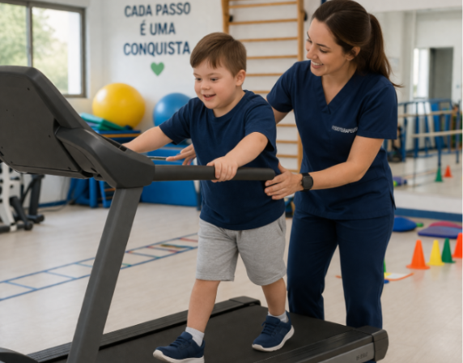
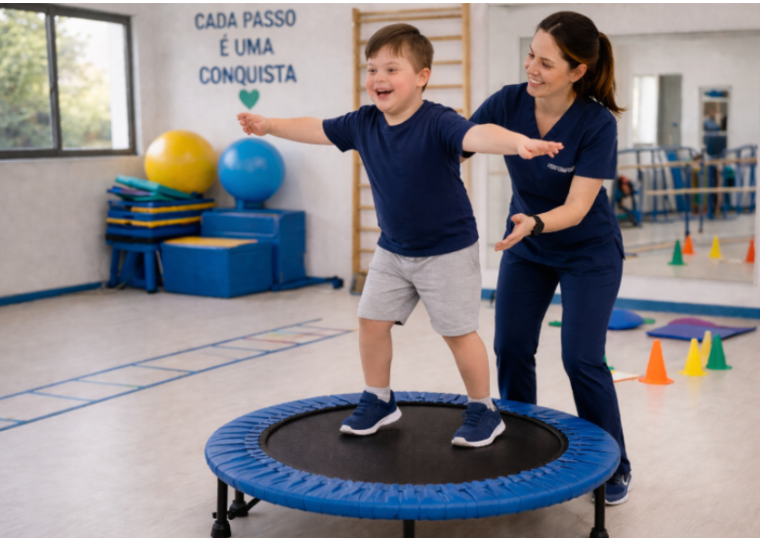
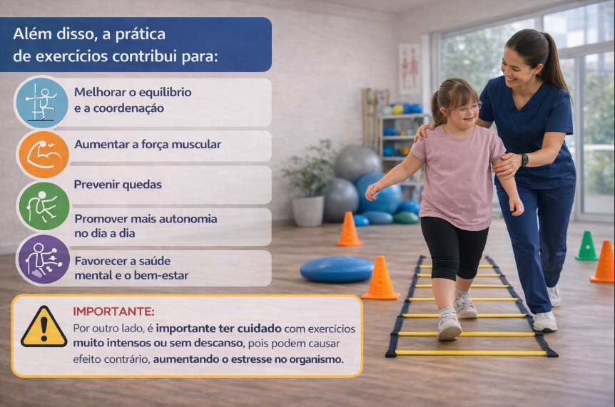

A fisioterapia utiliza diferentes estratégias que ajudam o corpo a ganhar força, equilíbrio e controle dos movimentos. Veja algumas das principais:
🧘♀️ Pilates
O Pilates trabalha o corpo todo, principalmente a região do tronco (abdômen e costas), que é essencial para a estabilidade.
👉 Benefícios:
- Melhora da coordenação
- Mais equilíbrio
- Maior controle dos movimentos
Com um tronco mais firme, a criança consegue se movimentar com mais segurança e precisão.

Treinamento na esteira
A esteira ajuda a treinar a caminhada de forma repetida e segura.
👉 Benefícios:
- Aumento da força nas pernas
- Melhora da forma de andar
- Mais segurança ao caminhar
- Melhor equilíbrio em movimento
Esse tipo de treino ajuda o corpo e o cérebro a organizarem melhor o movimento de andar.

Vibração de corpo inteiro
Nessa técnica, a criança fica sobre uma plataforma que vibra levemente, estimulando os músculos.
👉 Benefícios:
- Aumento da firmeza muscular
- Melhora do equilíbrio em pé
- Mais resistência muscular
É uma ótima estratégia para ativar músculos mais profundos, especialmente em casos de hipotonia.
Trampolim (cama elástica)
Além de divertido, o trampolim é um excelente exercício terapêutico.
👉 Benefícios:
- Melhora do equilíbrio
- Mais controle do corpo
- Aumento da força e resistência
- Melhor percepção corporal
A instabilidade da superfície faz com que o corpo precise se ajustar o tempo todo, treinando o equilíbrio de forma eficiente.

Por que esses exercícios são importantes?
Essas intervenções ajudam a criança a:
- Andar com mais segurança
- Cair menos
- Ter mais independência
- Brincar e participar mais das atividades
Ou seja, impactam diretamente na qualidade de vida.
❤ Importante:
Cada criança tem seu próprio tempo de desenvolvimento. O mais importante é oferecer estímulos adequados, com acompanhamento profissional e de forma leve e motivadora.
A fisioterapia vai muito além de exercícios: ela ajuda a construir autonomia, confiança e mais participação na vida diária.

Este conteúdo foi produzido por acadêmicos de Fisioterapia com o apoio de imagens e vídeos gerados por inteligência artificial, utilizados para enriquecer a experiência visual e transmitir a mensagem com mais sensibilidade.
Esse texto é apenas para fins informativos. Para orientação ou diagnóstico médico, consulte um profissional.
Referências:
- ● ARSLAN, F. N. et al. Effects of early physical therapy on motor development in children with Down syndrome. North Clin Istanb, v. 9, n. 2, p. 156–161, 2022.
- ● LEI, Z. et al. Effects of physical exercises on balance in children with down syndrome: a systematic review and meta-analysis. BMC Sports Science, Medicine and Rehabilitation, v. 17, n. 165, 2025.
- ● ZOLGHADR, H. et al. The impact of exercise interventions on postural control in individuals with Down syndrome: a systematic review and meta-analysis. BMC Sports Science, Medicine and Rehabilitation, v. 17, n. 35, 2025.